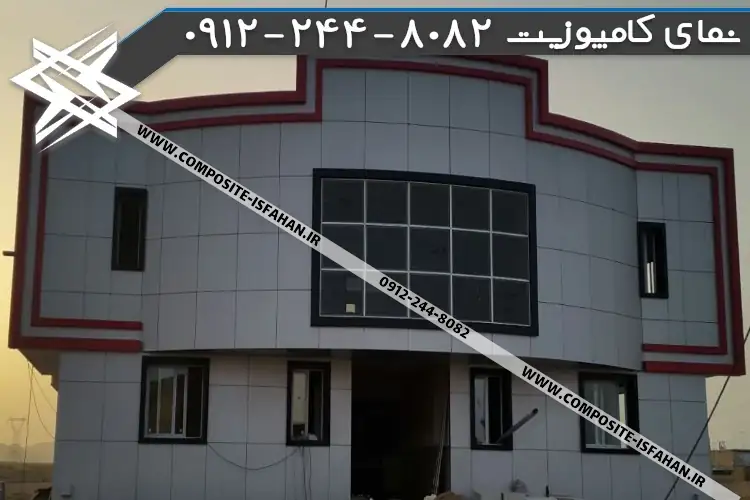
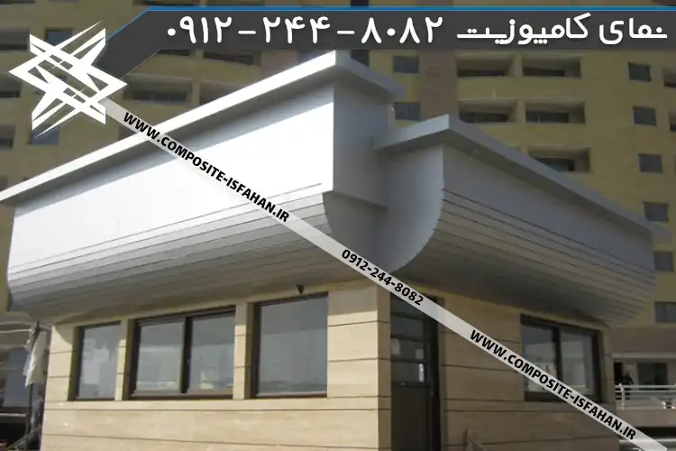
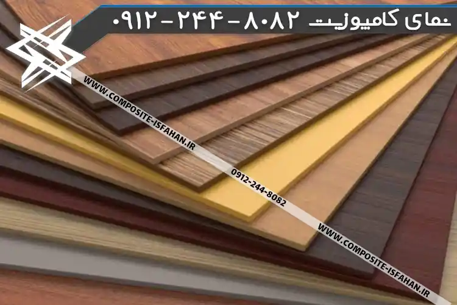
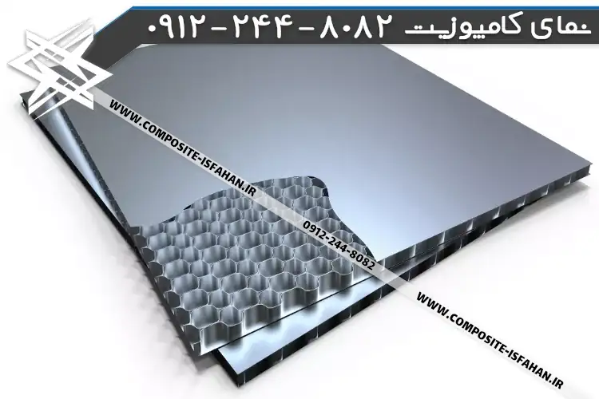
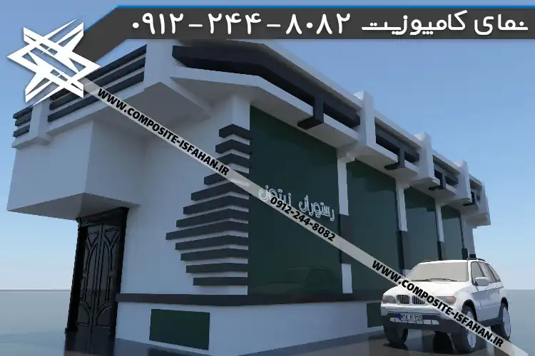
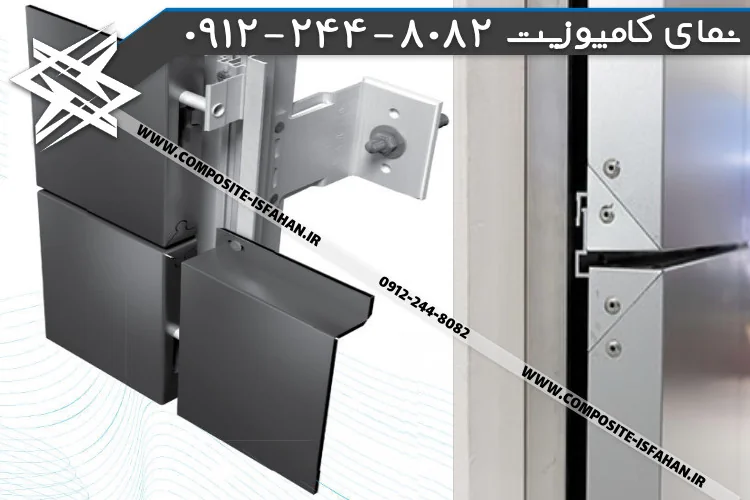
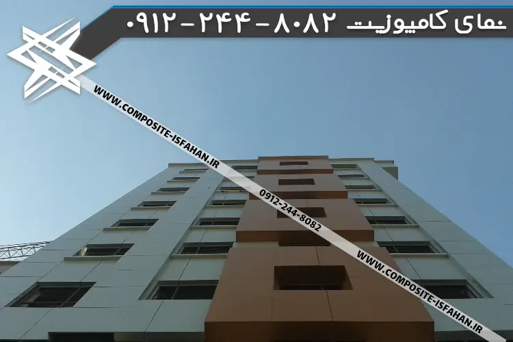
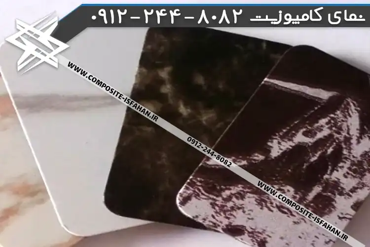

قیمت نمای کامپوزیت چگونه مشخص می شود؟
قیمت نمای کامپوزیت | قیمت ورق کامپوزیت | روش محاسبه
اول از همه بهتره که چندتا از عواملی رو که در تعیین قیمت دخیل هستند خوب بشناسیم تا بهتر مشورت کنیم و تصمیم اشتباهی نگیریم. باهم دیگه میریم سراغ این بحث داغ.

عوامل متاثر در قیمت تمام شده نمای کامپوزیت
قیمت نمای کامپوزیت به عوامل مختلفی مثل:
-
نوع ورق ( که شامل برند ، ضخامت ، درصد خلوص مواد پلی اتیلن و آلومینیوم ، ضد حریق بودن یا نبودن و نوع رنگبندی )
-
نوع طرح سه بعدی ( هر چه تعداد طرح ها بیشتر باشد هزینه آن بالاتر می شود )
-
روش نصب ورق کامپوزیت (به دلیل شیار دار کردن ورق روش فیکس میزان مصرف ورق بیشتری نسبت به روش غیر استاندارد H L یا زیواری دارد، روش هنگ نیز هزینه مازاد زیادتری نسبت به روش فیکس دارد )
-
مقدار قوطی مصرفی در نمای ساختمان ( که نصاب ها در آن خیلی موثر هستند و رابطه مستقیمی با حجم پروژه دارد )
-
مقدار و حجم پروژه ( هر میزان حجم پروژه بیشتر باشد ، کارفرما هزینه کمتری برای اجرا متحمل می شود )
-
ارتفاع پروژه ( هر چه ارتفاع بیشتر باشد هزینه نصب داربست و پس از آن ورق کامپوزیت ، برای کارفرما بیشتر می شود )
-
محل پروژه ( هر چه محل پروژه دور افتاده تر باشد ، کارفرما هزینه بیشتری را متحمل می شود )
بستگی دارد . با این شرایط قیمت دادن برای نمای کامپوزیت بدون در نظر گرفتن موارد فوق نمی تواند دقیق باشد.

اما شما قیمت حدودی را نیاز دارید که با شرح زیر می توانید حدود قیمت نمای کامپوزیت را به دست آورید. در آنالیزهای کلی هزینه ها به موارد زیر جهت محاسبه دقیق مساحت نما حتما توجه گردد:
-
نوع روش اجرا مشخص گردد ( در میزان استفاده از پیچ و پرج ، الکترود ، صفحه برش و چسب …. تاثیر می گذارد )
-
اندازه برش ورق ها ( به طبع به هر میزان که اندازه ها بزرگتر باشد هزینه کمتر می شود )
-
توجه به طرح نما و عوارض مثل فرو رفتگی برامدگی ( توجه به پیچیدگی نما و گاهی کرو کردن ورق کامپوزیت، به خودی خود هزینه مازاد است )
-
تعداد پنجره ها و نوع فلاشینگ دور آن و میزان حجم برجستگی ورق کامپوزیت
-
طرح فلاشینگ در پشت بام که سراسری انجام می شود یا خیر

تاثیر نوع ورق کامپوزیت بر قیمت آن

امروزه در بازار پر رقابت مصالح ساختمانی، فروشندگان سعی دارند تا با معرفی برندهای مرغوب و با قیمت مناسب کسب و کار خود را پیش ببرند. برند های ورق کامپوزیت بسیار متنوع و در چارچوب طرح های گوناگون و دلچسب روانه بازار فروش شده است .

ما در این بخش قصد دارید تا اندک تجربیات خودمان را در این مورد ، در اختیار شما قرار دهیم . ورق ها از نظر ضخامت از یک قانون برای تعیین قیمت پیروی می کنند که هر میزان ضخامت بیشتر گردد شما باید پول بیشتر بابت هر متر ورق کامپوزیت بپردازید.

نوع ورق نانو نسبت به ورق های معمولی گرانتر هستند. ورق های مخصوص نمای خارجی ساختمان، به دلیل دارا بودن لایه محافظتی بیشتر، گرانتر از نوع داخلی هستند.

ورق های که برچسب اکونومی یا مقرون به صرفه خورده اند کمی ارزان تر از نوع عادی هستند معمولا این ورق ها از نظر میزان خلوص آلومینیوم کمی دارای ناخالصی هستند و این دلیل بر ارزن تر بودن آنهاست.

ورق های ضد حریق که خود به چند دسته هستند از نوع معمولی با رقم قابل توجهی گرانتر هستند و همچنین ورق های طرح سنگ و طرح های خاص نسبت به ورق معمولی گرانتر هستند. نوع ورق های برس خورده با معمولی زیاد تفاوت قیمت ندارند .ورق های طرح چوب و آینه نیز گراتنتر از بقیه هستند.


تاثیر نوع طرح نمای کامپوزیت سه بعدی بر قیمت آن
یکی دیگر از عوامل متاثر جهت قیمت تام شده هر ساختمان، مربوط میشه به طراحی نما قبل از اجرا که کارفرما را مجاب میکنه تجسمی از چیزی که قراره روی نمای ساخامتن اجرا بشه داشته باشه . طرح ها معمولا از ساده به سمت شلوغ شدن پیش می رن در اینجا که حرف از نمای آلومینیوم کامپوزیت هست، توجه به تعداد جاهای کرو و برآمدگی ها دور پنجره ها و… خیلی حائظ اهمیته . قانون کلی هم زیاد دور از انتظار شما نیست . هرچقدر طرح ساده تر باشه هزینه کمتری خواهد داشت و البته مهمه که به زیرسازی نما هم توجه کنید تا استاندارد و ایمن باشه.

معمولا در طرح نمای کامپوزیت مغازه از متریال ثالثی استفاده نمیشه ولی بعضی وقت ها با توجه به درخواست مشتری ، از لوله هاای استیل نیز برای زیباتر کردن استفاده میشه .
نتکه این بخش اینه که همواره سعی کنید طرحی رو انتخاب کنید که میزان پرتی ورق کمتری به شما بده و این برمیگرده به ابعاد ورق کامپوزیت در طرح سه بعدی .
دقت به همه این موارد میتونه مانع پرداخت هزینه های اضافی بشود.
تاثیر روش نصب ورق کامپوزیت بر روی قیمت آن
اول از همه یک اشاره کوتاه به روش های نصب ورق کامپوزیت میکنیم تا بهتر دربارش توضیح بدهیم.
- روش هنگ
- روش فیکس
- روش فرم اچ و ال
- روش ترکیبی کلیپس
در روش هنگ متریال هایی مثل بچه ناودانی های آلومینیومی استفاده می گردد که هزینه نهایی را افزایش می دهد . از طرف دیگر در این روش لبه های برگشتی حدود پنچ سانت از دو طرف و بالا و پایین دلخواه میزان مصرف ورق نسبتا بالاتر از روش های دیگر است.
در روش هنگ استادکار یا نماکار کامپوزیت باید پس از جوشکاری بچه ناودانی ها را روی زیرسازی پروفیل آنهی مستقر کند . پس هزینه اجرای نصب نیز بالاتر است.

چرا و کجا از روش هنگ استفاده میشود؟
خب شای دبراتون جالب باشه که بدونید اگه هزینش گرونتره چرا فیکس نه؟ خب در جواب باید بگیم که روش هنگ نمای کامپوزیت در ارتفاعات بلند و برای تعویض راحت پانل اجرا میشه و حفظ صافی نمای ساختمان یکی از وظیفه های ناودانی آلومینیومی هست که بخاطر این علت این روش توصیه شده.
روش فیکس که متداول ترین نوع روش نصب ورق کامپوزیت هست، با انجام یک سری کارها قبل از نصب روی روق ، مثل شیار برش و خم ، ورق آماده نصب می شود و باز اینجا یک مقداری از ورق در میان خم و چال ها و حجم فدا میشود . روش فیکس نسبت به روش هنگ ارزان تر بوده و اینجا دیگه نیازی به ناودانی نداریم. تنها کاری که باید کرد دقت به زیرسازی هست .
در روش فیکس ابعاد ورق کامپوزیت با اصطلاحی به اسم ژوئن از هم جدا هستند و این درزها با واشر مخصوصی پوشیده میشود.
شما مختار هستید که از واشر استفاده کنید یا نکنید. البته ضد آب بودن نما را باید در نظر بگیرید. واشر نیز دردسرهای خاص خودش را دارد که ممکن است در اثر تاثیرات آب و هوا کنده شود.
روش فرم اچ و ال خشابی یک روش غیر استاندارد است و کمترین میزان استفاده ورق مربوط به این روش است زیرا در این روش ورق از چهارگوشه خم نمی شود و تایل ها درون فرم ها قرار می گیرند.
خب چرا غیر استاندارد؟ چون که ورق ها حتی اگه چسب کاری شوند به مرور زمان ممکنه که بر اثر یک باد کنده شده و از ارتفاع سقوط کنند و از بین بروند.
ظاهر نمای کامپوزیت در این روش زیاد دلچسب به نظر نمی رسد ولی اگر به دنبال اجرای نمای کامپوزیت در ارتفاع کم و سایه و یا داخل ساختمان یا سقف هستید، و در عین حال میخواید که کمترین پرتی ورق ممکن را داشته باشید ، از این روش استفاده کنید .
روش ترکیبی بین همه این روش ها نوع کلیپس است که همانطور که از اسمش پیداست ورق ها به هم کلیپس می شوند و ظاهر بسیار تمیزی بدون نمایان شدن پیچ و یا پرچ بر جای می گذارند .
این روش نیازمند یک نماکار کامپوزیت ماهر است تا کارش را به بهترین نحو انجام دهد. اگر تمام سازه با این روش صورت گیرد ،قیمت تمام شده در این روش کمی بیشتر از نوع فیکس و فرم است.
تاثیر میزان مصرف پروفیل در قیمت نمای کامپوزیت
پروفیل های آهنی جزئی از متریال های اولیه برای اجرای نمای کامپوزیت به حساب می آیند که بایستی در تهیه آن دقت کنید. تکنولوژی جدید در ساخت آلیاژ سبکتر در نمونه پروفیل های آهنی ، گزینه مناسب تری برای خرید هستند . کما که در نمای ساختمان وزن کلی سازه هم بسیار اهمیت داشته باشد .

ما در این بخش میخوایم توضیح بدیم که چطور این متریال بر هزینه نهایی نمای ساختمان تاثیر می گذاره. خب به طبع همه میدونیم که هر چه کمتر پس ارزانتر اما نکته مهم اینه که زیرسازی نمای کامپوزیت نه باید زیاد خلوت باشه نه بیش از حد سنگین. تشخیص این که آیا استادکاری که داره نمای کامپوزیت رو براتون اجرا میکنه ، پروفیل به اندازه کافی مصرف میکنه یا نه ، کمی دشوار هست.
در هر حال اصولا زیرسازی باید به صورت محکم با رعایت جوشکاری صحیح انجام بشود. قبل از انجام زیرسازی احتیاط کنید که نصاب پروفیل ها را حتما ضد زنگ زده باشه.
انتخاب پروفیل 4040 یا 4020 برای اجرای زیرسازی معمولا منطقی به نظر میرسه ولی پروفیل های کوچکتر خیر.
در نهایت حتما به این مقوله هم توجه داشته باشید و همواره از کامپوزیت کار بخواید که زیرسازی محکمی ارائه بدهد.
هزینه اجرای هر متر مربع نمای کامپوزیت
به طور کلی هزینه های اجرا که بر روی قیمت نمای کامپوزیت تاثیر گذار است، برای کارفرمایان محترم به شرح زیر می باشد:
- هزینه خرید ورق کامپوزیت
- هزینه زیرسازی نمای کامپوزیت با پروفیل آهنی ( خرید پروفیل 4040 یا 2040 یا… )
- هزینه اجرت نصب ورق کامپوزیت توسط نصاب ( که به روش نصب بستگی دارد هزینه روش هنگ از فیکس بیشتر است )
- هزینه طراحی (در برخی موارد احتساب می گردد )
- هزینه پوست کنی نمای کامپوزیت (در پروژه های عظیم اهمیت پیدا می کند)
- هزینه برش ورق کامپوزیت برای نصب لامپ هالوژن (در پروژههای جایگاه سوخت اهمیت پیدا می کند)

قیمت ورق کامپوزیت طرح سنگ
برای این که قیمت ورق کامپوزیت طرح سنگ رو بدست بیاریم باید به چند فاکتور مهم توجه کنیم:
- آیا برندی که انتخاب کردیم معتبر هست یا نه؟
- آیا برای نمای داخل ساختمان میخایم یا بیرون؟
- آیا میخایم غبار روش نشینه یا مهم نیست؟
- آیا میخایم در جاهای قوس دار استفاده کنیم یا صاف؟
- سطحش ساده باشه یا طرح دار؟
- در کنار چه رنگ ورقی میخایم استفادش کنیم؟

با توجه به موارد بالا،ما معمولا به مشتری پیشنهاد میکنیم که نمونه کاری رو با ورقی که مد نظرش هست اول ببینه و شاید نظرش عوض بشه؟ و بعد به بازخوردهای مشتری هایی که از اون ورق کامپوزیت استفاده کردند توجه بکنه .
آیا میخواید در دکوراسیون داخلی از نمای کامپوزیت طرح سنگ استفاده کنید؟ پس باید نوع ورق مختص به اون رو بخرید . معمولا جنس بیرونی رو از یک لایه مخصوص که روش هست استفاده میشه و نسبت به ورق کامپوزیت طرح سنگ داخل ساختمان مقاومتر هست در برابر ضربه و قیمتش هم گرونتره .
پس اگه احساس میکنید که هیچ اتفاقی قرار نیست برای ورق بیفته یا جایی هست که کمتر در معرض ضربه خوردن هست، گزینه بهتر ورق مخصوص نمای داخلی هست.
تکنولوژی نانو در ورق کامپوزیت طرح سنگ در نوع دیگری از اون ها در کالرچارت ورق کامپوزیت دیده میشه که این نوع جنس ورق ، کمتر گرد و غبار رو میگیره و راحت تر شسته میشه. اگه قصد دارید طرح های قوس دار انجام بدید، سعی کنید ورق های نازکتر استفاده کنید ورق های ضخیم در هنگام کرو شدن مشکل ساز هستند.
از هوش و سلیقه دوستان و اطرافیان در انتخاب نوع طرح ورق کامپوزیت غافل نشوید. نوعی از ورق ها سطح صافی ندارند که به اصطلاح به اونها براش یا برس خورده میگن که باز به دو دسته دیگه یعنی شفاف و مات نیز باید توجه کنید . انتخاب زمینه های ساده در کنار ورق های طرح دار شلوغ رو فراموش کنید.